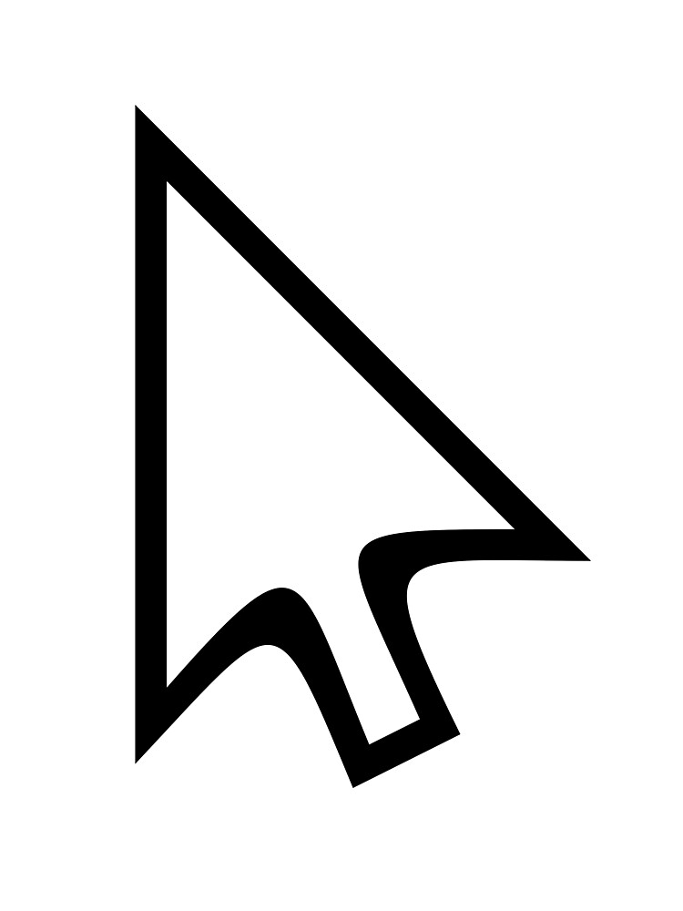

LECON N°1: Initiation à la bureautique
C'est quoi la bureautique?
Ensemble des techniques et des moyens tendant à automatiser les activités
de bureau.
C'est quoi l'informatique?
L'informatique est une discipline basée sur le traitement d'information
via le moyen electronique appeler ordinateur.
C'est quoi un ordinateur?
Un ordinateur est une machine automatique de traitement de
l'information.
Les informations traitées par l'informatique sont de differentes natures;
des nombres, des textes,
des sons, des images, des clips videos etc.
Les composants d'un ordinateur
PC(portable computer), desktop(ordinateur de bureau)
sont composés de la même manière:
- Un ecran
- Un clavier
- Une souris ou un trackpad (pavé tactile) pour les portables
- Une unité centrale, coeur et cerveau de l'ordinateur lorsqu'il ne sagit pas
d'un outil portable.
L'ecran d'un ordinateur

L'ecran est la partie de l'ordinateur qui va afficher du contenu.
C'est grâce à lui que l'utilisateur peut interagir avec l'ordinateur. quand on tape sur le clavier
et qu'on utilise la souris, cela se répercute à l'ecran et les données s'affichent.
L'ecran peut varier en taille. Pour un ordinateur portable, il est possible
d'en posséder un très compact: 10 pouces. Les ordinateurs fixes commencent à 15 pouces et peuvent
atteindre 27 pouces voire plus si l'utilisateur decide d'opter pour écran TV.
Le clavier d'un ordinateur

Il permet d''écrire du texte et ainsi de communiquer avec l'ordianteur. Les claviers possèdent
générélement une certaine touches: lettres de l'alphabet, chiffres, accents et touches speciales.
C'est ainsi le descendant de la
machine à ecrire.
La souris
La souris(en anglais << mouse >>) est péripherique de pointage servant à
déplacer un curseur sur
l'ecran
et permettant de sélectionner, déplacer,
manipuler des objets
grâce à des boutons.
La souris prend habituellement la forme d'une flèche à l'écran 
Unité centrale
Element principal d'un ordinateur, l'unité centrale
se materialise par un boitier, qui
recèle tous les composants essentiels d'un ordinateur exceptés le clavier,
le moniteur (écran) la sourie: à savoir la carte mère et
le processeur, le disque dur, les lecteurs et graveur
de CD/DVD et de nombreux autres composants.